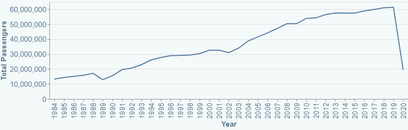
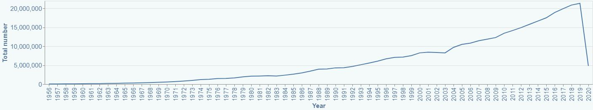
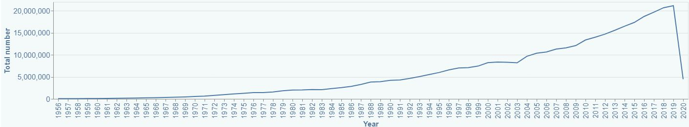

The tourism industry encompassing domestic and international travel in Australia is significant, contributing 716,000 jobs and $69 billion dollars in gross value added to Australia's GDP. (1)
Australia maintains a number of internationally recognised airports, all containing domestic and some containing international flight hubs. Most airports are interlinked for domestic travel.
Australia is served by two key providers in Australia flying international and domestic routes. This website looks to investigate patterns within domestic and international travel within Australia.
Qantas was founded in 1920 and is Australia's largest airline for international flights and destinations.
Commencing in 2000 Virgin Australia is one of the largest domestic flight carriers in Australia. They fly to 33 cities within Australia.
Jetsar (founded in 2003) is Australia's which is owned by Qantas which is a budget low domestic airline which has select international flights.
Domestic travel within Australia has been an ever-expanding industry. AS seen from the graph on the left the total domestic travel has seen an increasing trend over the last ~40 years. This is replicated in the departure and arrival data for international flights with a growing trend within the industry. Flights international have grown exponentially due to advancements in technology and the accessibility.
Trends in data
2001
In the year 2001 the world was mortified with the September 11th attacks on the Twin Towers. This event impacted many aspects of what was perceived to be normal life including flying and tourism. From the data seen in the graphs to the left this impact can be analysed as flights domestically and internationally in Australia stagnated and decreased between the years 2001-2002. Residents around the world had fears of flying due to this traumatic event which hurt the industry. Consumer confidence was retrieved with further years following the growing trend of domestic and international travel.
Impact due to COVID- 19
Due to the current COVID – 19 pandemic the travel industry has massively suffered. This is due to travel restrictions between states alongside international travel. As seen in the data within the year 2020 travel dropped drastically. This was mainly due to boarder closures between states domestically to limit the spread of the virus alongside international borders. Boarders between international countries and states are expected to be open by the end of 2021.
Total Domestic Passengers Every Year
Total Inbound International Passengers Each Year
Total Outbound International Passengers Every Year
Code avaliable on github
This section aims to investigate when do Australians travel domestically. This data was to analyse if there were months over the last 20 years in which Australians preferred to travel. From the bar chart below, on average February seems to be the month with the least amount of travel. This can be seen as people undertaking less travel after the busy travelling holiday period October- January so that this affects the average passengers for this period. Trends also include that travel within the summer months is higher than those in the winter months.
Average Domestic Passengers Between 2000-2019
`This section aims to investigate popular routes domestically within the past 20 years of travel within Australia.
References